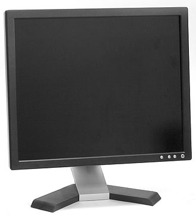

 A computer monitor is an output device that displays information in pictorial form. A monitor usually comprises the display device, circuitry, casing, and power supply. The display device in modern monitors is typically a thin film transistor liquid crystal display (TFT-LCD) with LED backlighting having replaced cold-cathode fluorescent lamp (CCFL) backlighting. Older monitors used a cathode ray tube (CRT). Monitors are connected to the computer via VGA, Digital Visual Interface (DVI), HDMI, DisplayPort, Thunderbolt, low-voltage differential signaling (LVDS) or other proprietary connectors and signals.